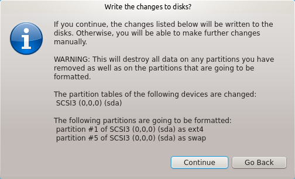
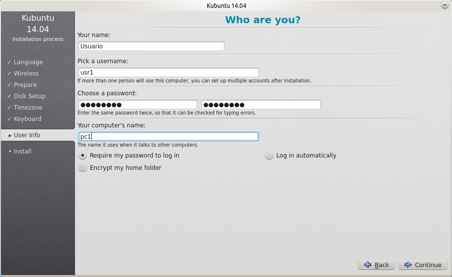
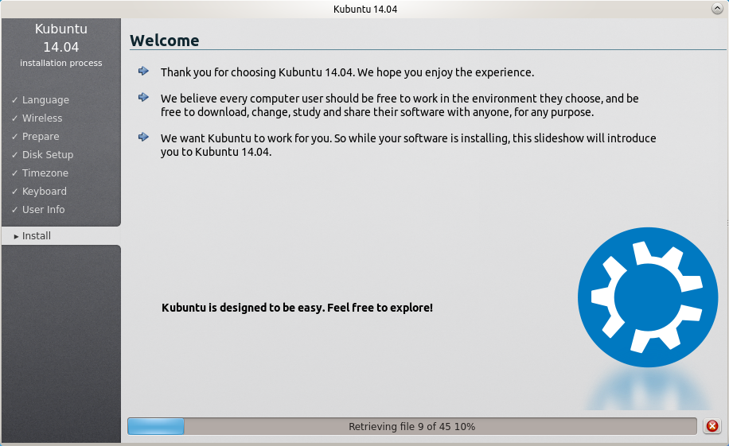
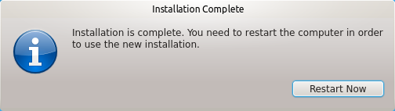

Todo lo contado aquí puedes encontrarlo en http://docs.kubuntu.org/installation.html
En primer lugar debemos contar con un usb que permita arrancar la instalación de ubuntu. Puedes aprender como hacerlo aquí
Marcar "Install this third-party software"
Si tenemos conexión a internet marcar también "Download updates while installing" y pulsar "continue"
Marcar "Guided - Use entere disk" y pulsar "Install Now"
Puede aparecer una notificación:
Nos informará de los cambios y nos pedirá confirmación. Atención! Esta opción borrará por completo el disco duro, si es una reinslación asegurémosnos antes de que hemos salvado los datos útiles. Si estamos seguros pulsar "Continue"
Seleccionar: Region="Africa" Time Zone="Cape Verde Time"
y pulsar "Continue"
Seleccionar: Layout="Spanish" Variant="Spanish - Spanish (eliminate dead keys)" y pulsar "Continue"
Para completar este paso tenemos que elegir la siguiente información:
Introducimos la información anterior en cada casilla, dejando marcado "Require my password to log in"  y pulsar "Continue"
 Espera hasta que el proceso finalice
 Retira el pendrive o disco y pulsa "Restart Now"
¿Cuál era mi contraseña? Mi frase era: "Nueve para los hombre mortales condenados a morir" Entonces es:"9Plhmcam" La escribo y pulso la flecha de al lado
Ahora solo resta disfrutar ¿Ponemos aquí una dirección de correo para dudas? Volver al índice de tutoriales